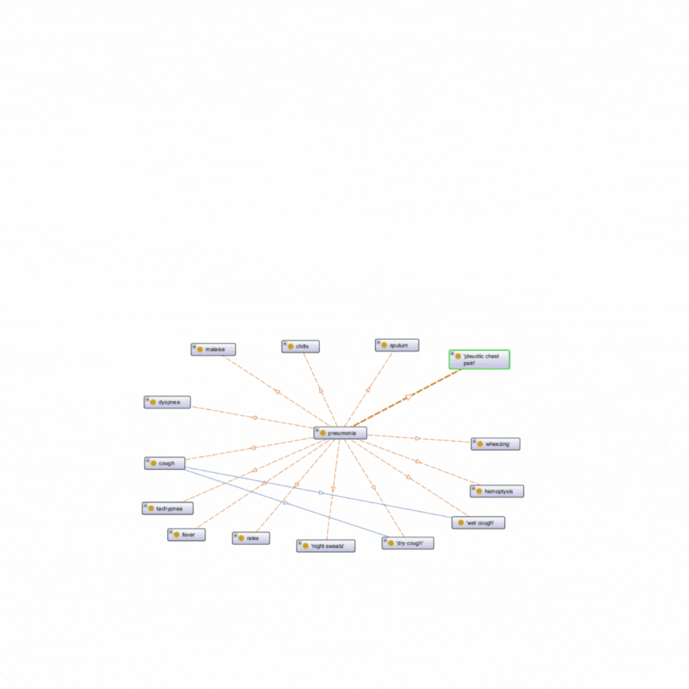
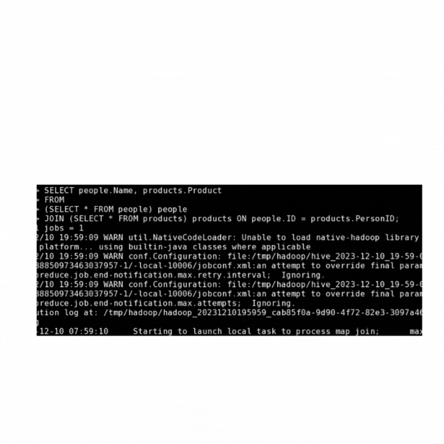
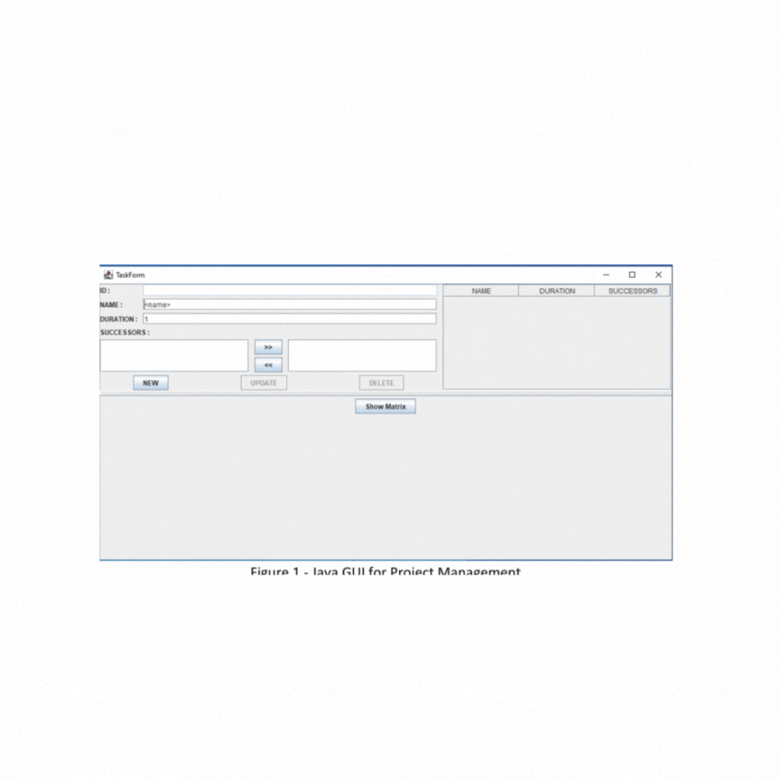
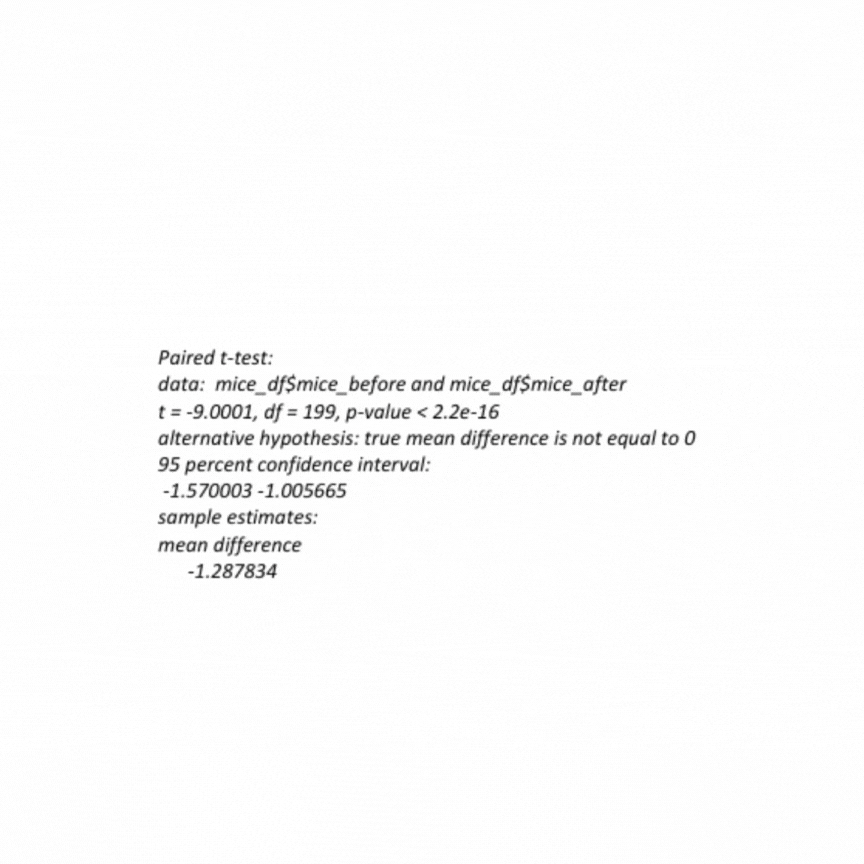

Maitri Bhajiwala
AI researcher in training exploring vision, language, and design through machine learning

Projects
Project Screenshot
Art Vision Enhancer - Cambridge Research Project
Problem:
How can AI assist art students during conceptual ideation and visual enhancement?
Approach:
Research project exploring computer vision techniques for artistic enhancement and creative workflow optimization.
Outcome:
Developed innovative approaches to visual processing and creative AI applications.
Next steps:
Expanding research into multimodal AI for creative applications.

Ontology-Based Expert System For Disease Diagnosis
Problem:
Can ontologies support more accurate disease diagnosis through structured knowledge representation?
Approach:
Built semantic ontology system using Protégé with rule-based inference engine for medical diagnosis.
Outcome:
Prototype yields accurate diagnoses in simulated user tests with structured knowledge representation.
Next steps:
Integration with clinical databases and expanding disease coverage.
Black Hole Visualisation
The Entropic Archive
Problem:
How can we make abstract astrophysics concepts like black holes tangible through interactive designs?
Approach:
Creating an immersive web experience where user data decays over time, simulating spaghettification, Hawking radiation, and information paradox effects.
Outcome:
A generative art platform that transforms inputs into cosmic entropy using Django, Canvas API, and physics-inspired algorithms
Next steps:
Expanding the simulation with more complex astrophysical phenomena and enhancing user interaction.

Super Mario Bros Reinforcement Learning Bot
Problem:
Can reinforcement learning agents master complex platformer games through visual input?
Approach:
Implemented Deep Q-Network using PyTorch and OpenAI Gym Super Mario Bros environment.
Outcome:
Agent successfully learned to navigate levels and overcome obstacles through trial and error.
Next steps:
Refining policy networks and exploring advanced RL algorithms.

Hive Warehouse and Information Visualisation
Problem:
How to efficiently process and visualize large-scale data for business insights?
Approach:
Built scalable data warehouse using Apache Hive with interactive visualization dashboards.
Outcome:
Achieved efficient data processing pipeline with comprehensive visual analytics platform.
Next steps:
Implementing real-time streaming analytics and ML-based insights.

Project Management System
Problem:
Streamline project workflow and team collaboration for enterprise clients.
Approach:
Developed comprehensive Java-based project management system with user authentication and task tracking.
Outcome:
Delivered full-featured system improving team productivity and project visibility.
Next steps:
Adding mobile app integration and advanced analytics features.

Statistical Techniques with R
Problem:
Apply advanced statistical methods for data analysis and predictive modeling.
Approach:
Implemented comprehensive statistical analysis using R with advanced visualization techniques.
Outcome:
Successfully applied multiple statistical models with clear data-driven insights.
Next steps:
Integrating machine learning models with statistical analysis pipeline.
About
Computer Science graduate from the University of Greenwich with First-Class Honours, where late nights debugging code turned into a passion for building intelligent systems. The journey so far includes creating medical diagnosis tools that actually help people, and chatbots that nudge students toward more creative thinking.
What excites me most? That moment when complex algorithms click into place. Whether it's making sense of messy data or finding elegant solutions to gnarly problems, that's where the magic happens. Currently looking for opportunities to build things that matter with people who care.